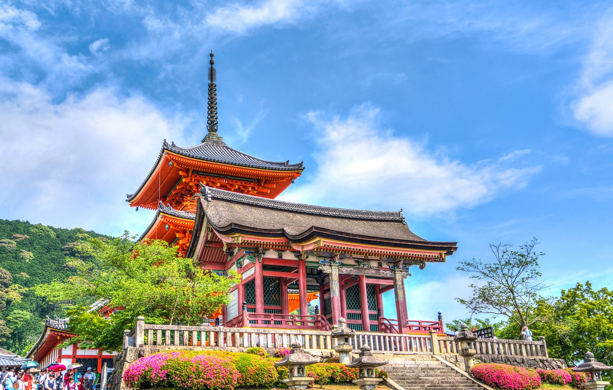
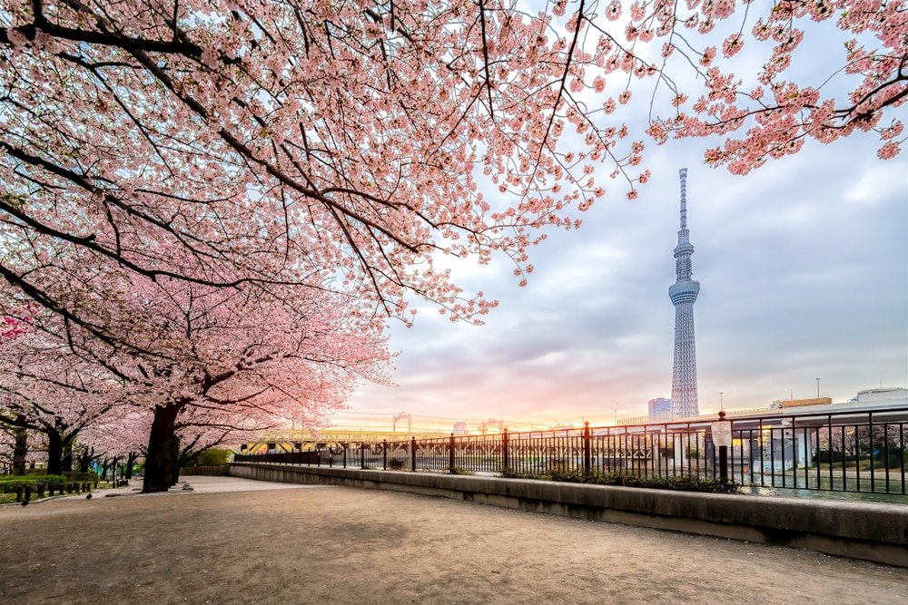

Les bonnes adresses
Lieux à visiter

Les jardins de Shinjuku
Le jardin de Shinjuku, surnommé "oasis urbaine", est l’un des parcs les plus importants de la capitale...
Sensõ-Ji
Le Sensō-ji est un temple bouddhiste situé à Tokyo, dans le quartier d'Asakusa...
Tokyo Skytree
La Tokyo Skytree est une tour de radiodiffusion du Japon, située dans l'arrondissement Sumida de Tokyo....
Hotel

Hotel Sunroute Plaza Shinjuku
Arrondissement de Shibuya
Situé dans le centre de Shinjuku, à seulement 4 minutes à pied de la gare de Shinsen-Shinjuku et de la gare JR Shinjuku...

The Royal Park Hotel Tokyo Haneda
Arrondissement d'Ōta
Avec son hall situé à côté de l'aéroport Haneda, The Royal Park Hotel Tokyo Haneda...

The Tokyo Station Hotel
Arrondissement de Chiyoda
Rouvert en 2012 après d’importants travaux de rénovation, le Tokyo Station Hotel est classé « bien culturel d’importance »...
Restaurant

Sushizanmai Main Branch
Restaurant de Sushi
Notre avis : Excellent rapport qualité-prix...

Nabezo Shibuya Koen Dori
Restaurant de Sukiyaki et Shabu-Shabu
Notre avis : Endroit raffiné et sympathique pour goûter du shabu shabu à volonté...

Gyukatsu Motomura Harajuku
Restaurant traditionnel japonais
Notre avis : Fantastique. Délicieux. Incroyable...
Carte interactive
Lieux à visiter
Les jardins de Shinjuku
Sensõ-Ji
Tokyo Skytree
Hôtels
Hotel Sunroute Plaza Shinjuku
The Royal Park Hotel Tokyo Haneda
The Tokyo Station Hotel
Restaurants
Sushizanmai Main Branch
Nabezo Shibuya Koen Dori
Gyukatsu Motomura Harajuku